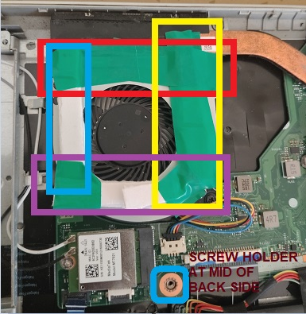

| SNAPSHOT INSIDE ACER LAPTOP HAVING A PASTED SHEET AROUND THE FAN. |
 |
|
Laptop Repair Fan Sound
From Fri 01-May-2026 IST to Mon 15-Jun-2026 IST:When I switched on the laptop, after 10 to 12 minutes I used to hear a (scraping) grrrr sound from the backside of the laptop due to the rotation of the fan inside my Acer laptop.
The fan rotation sound problem was present from 01-May-2026 IST to 16-Jun-2026 IST.
During 01-Jun-2026 I met a broker who removed a few screws (3 to 4) from the backside of my laptop.
Once repaired, he gave my laptop back to me on 03-Jun-2026 and I paid 1000.00 INR to buy a new fan.
The problem was not resolved.
During 09-Jun-2026 IST I gave my laptop back to him.
He told me that I needed to wait for 10 days to get the delivery of a replacement fan from the provider. There would be no service charge since he had already taken 1000.00 INR from me.
I waited until 15-Jun-2026 IST.
The new fan was not yet delivered. On 16-Jun-2026 I informed the broker to repair my laptop in the year 3026 since the current year is 2026. Without any repair, I took my laptop back from the broker. On 16-Jun-2026 I repaired the fan sound myself using the following method:
|
|
|
01. Take a snapshot of the backside of the laptop to know the count of the number of screws. 02. You can repair this yourself. 03. Remove all the screws from the backside of the laptop using the smallest screwdriver. 04. After removing the backside cover of the laptop, paste a tight sheet/paper having a height of approximately 0.5mm to 0.8mm around the fan using insulation tape. 05. When doing this, do not turn or rotate the laptop since some of the internal screws may fall down or move to other parts inside the laptop. 06. After pasting the sheet using tape, close the backside of the laptop and reinstall all screws. On Tue 16-Jun-2026 IST, after following these steps, my laptop no longer produced the (scraping) grrrr sound. :)
|
|